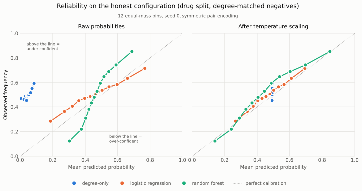

Когда человек пьёт пять препаратов сразу, именно эту комбинацию не проверял никто. Проверяли каждый препарат отдельно.
госпитализаций пожилых людей вызваны нежелательными реакциями на лекарства.
Систематический обзор исследований 2015–2025 годов. Разброс объясняется тем, какую группу пациентов изучали и как именно выявляли реакцию.
вероятность нежелательной реакции при двух, пяти и восьми препаратах одновременно.
Оценка из более ранней литературы, которую приводит когортное исследование 2014 года. Верхнее значение стоит читать как «почти неизбежно», а не как точное измерение.
во столько раз полипрагмазия повышает шансы попасть в больницу из-за лекарства.
5707 пациентов, поступивших экстренно. В этом же исследовании нежелательные реакции стали причиной 5,0 % госпитализаций (95 % ДИ 4,5–5,6 %).
различных сочетаний лекарств среди 50 классов, чаще всего связанных с госпитализациями.
89 235 случаев госпитализации сопоставлены с 443 497 контролями. Столько сочетаний невозможно проверить в клинических испытаниях по одному.
69 % повторных госпитализаций из-за лекарств признаны предотвратимыми — но межквартильный размах оценок 19–84 %. Плохо известно даже то, насколько велика сама проблема.
Проверить 112 000 сочетаний в клинических испытаниях нельзя. Поэтому предсказывать взаимодействия учат модели: пропустить через них непроверенные пары и найти те, что заслуживают внимания. Модели отчитываются о высокой точности, и именно эта точность — основание доверять их выводам о непроверенных парах.
Мы не стали спорить с самой цифрой. Мы спросили другое: из чего она складывается.
Стандартный способ измерить качество — разделить известные пары взаимодействий на обучающие и тестовые. Разделение идёт по парам: одна пара в обучение, другая в тест. Но препараты в этих парах — одни и те же.
В результате модель на тесте видит препараты, которые уже встречала при обучении, и знает про них главное: сколько взаимодействий у каждого уже описано. Хорошо изученный препарат взаимодействует со многим — просто потому, что его много изучали. Модель может угадывать по этому признаку, ни разу не обратившись к химии.
А для по-настоящему нового препарата этого признака не существует. У него ноль известных взаимодействий — не потому, что их нет, а потому, что их не искали. Модель, которая опиралась на счётчик, здесь остаётся без опоры.
Это структурное свойство, а не недосмотр. Модель, которая оценивает пару по положению препарата в сети известных взаимодействий, не имеет что агрегировать для препарата без единой связи. Проверить это можно только одним способом — измерить.
Четыре измерения на данных TDC DrugBank: 1706 препаратов, 191 402 пары. Каждое число — из файла в репозитории.
столько тестовых пар содержат препарат, которого модель не видела при обучении.
Остальные 28 705 собраны из знакомых препаратов. То есть модель почти никогда не оказывается в той самой ситуации, ради которой её строят. Это 99,98 % знакомых пар; сид 0, по трём сидам 99,94–99,98 %.
reports/split_comparison.csv
качество модели из двух чисел против полной модели на 4096 химических признаках.
Два числа — это сколько взаимодействий уже известно у каждого препарата из пары. Больше ничего. Случайное угадывание даёт 0,5, поэтому полная модель отыгрывает у случая 0,415, а модель из двух чисел — 0,368: два числа дают 89 % того, что отделяет полную модель от случайного угадывания. Среднее по 5 сидам.
reports/phase_a_results.csv, reports/phase_a_full_rf.csv
точность, с которой из внутреннего представления сети восстанавливается число известных взаимодействий препарата.
Мы обучали сеть предсказывать взаимодействия, а научили её считать популярность препарата. Диапазон — от честного протокола до стандартного.
reports/degree_shortcut_probe.csv
какую вероятность взаимодействия модель называет и какая доля пар взаимодействует на самом деле.
На незнакомых препаратах модель не просто ошибается — она уверенно говорит «риска почти нет» там, где взаимодействует половина пар.
reports/calibration.md
Последнее число — самое важное для пациента. Инструмент, который ошибается сильнее всего именно на новых препаратах и редких сочетаниях, даёт ложное спокойствие там, где нужна настороженность. Врач без такого инструмента проверит вручную. Врач с ним — не проверит.
Слева направо задача становится честнее: сначала препараты в тесте знакомы модели, потом полностью незнакомы, потом незнакомы даже по химическому скелету. Ось начинается с 0,5 — это уровень случайного угадывания, и она не обрезана.
AUPRC, среднее по 5 сидам, равномерные негативы, объединённый тест. Источник: reports/phase_a_results.csv
Обрати внимание на первый ряд: модель, которая не видела ни одной молекулы, на стандартном протоколе идёт вровень с моделями на химии. Разрыв открывается только тогда, когда препараты в тесте становятся незнакомыми.
По горизонтали — какую вероятность взаимодействия называет модель. По вертикали — какая доля пар взаимодействует на самом деле. Идеально откалиброванная модель лежала бы на пунктирной диагонали.
Модель из двух чисел (синяя) собралась в комок у левого края: она называет вероятности около 0,05, а взаимодействует примерно половина этих пар. Она не разбросана вокруг правильного ответа — она систематически и уверенно занижает.

Причина проверяема и точна: при разделении по препаратам каждая тестовая пара содержит препарат с нулевой обучающей степенью, тогда как среди обучающих пар таких нет ни одной. Модель предсказывает за пределами диапазона, на котором её обучали, — и делает это уверенно.
reports/calibration.md
Мы собирали блок «что у препаратов общего в организме» и увидели: метформин и варфарин делят 95 общих мишеней — при том что у метформина их всего 102, а у варфарина 109. Почти полное совпадение. По курированной базе DrugBank, где записана роль белка для конкретного препарата, у этой пары ноль общих белков — ни мишеней, ни ферментов, ни переносчиков, ни транспортных белков.
Откуда 95? Оба препарата прогоняли через одну и ту же панель биологических тестов. Совпадает не биология — совпадают наборы анализов. Блок общей биологии на сайте поэтому использует только DrugBank, и выбор источника закреплён тестом, а не соглашением.
во столько раз завышается доля пар с «общей биологией», если считать по результатам скрининга, а не по курированным записям.
54,7 % случайных пар против 3,0 %. Из «общих по скринингу» пар курированная база подтверждает 3,5 %.
reports/chembl_panel_artifact.md
связь между числом «общих мишеней» и тем, насколько мало изучен менее изученный препарат пары.
Перекрытие почти полностью объясняется объёмом скрининга. Это ранговая корреляция Спирмена на выборке 6000 пар.
reports/chembl_panel_artifact.csv
Это третий независимый путь, которым «насколько препарат изучен» подменяет собой биологию. Все три измерены:
| Канал | Измерение | Файл |
|---|---|---|
| Степень узла в графе взаимодействий | R² 0,885–0,954 | reports/degree_shortcut_probe.csv |
| Число биологических аннотаций | 0,812 → 0,692 | paper/tables/table5_ablation_ladder.csv |
| Перекрытие панелей скрининга | ρ = +0,832 | reports/chembl_panel_artifact.csv |
Второй канал: если перемешать, к каким именно белкам привязан каждый препарат, сохранив при этом точное число аннотаций у препарата и у белка, качество падает с 0,812 до 0,692 — больше, чем весь выигрыш от добавления биологии. Значит работает идентичность белков, а не их количество.
Это не упрёк базе. Она честно хранит то, что в ней хранится: результаты анализов. Ошибка возникает, когда факт постановки анализа читают как факт биологического отношения — и тогда модель выучивает объём скрининга.
Основную модель мы зафиксировали до того, как открыли тестовую выборку — так требует пререгистрация. Когда тест был открыт, выяснилось, что зафиксированная конфигурация — самая слабая из четырёх ступеней биологии. Качество растёт до M2, а дальше падает: каждый следующий слой данных отнимает точность. Контроль с другим способом свёртки тоже оказался выше.
| Конфигурация | На отложенных препаратах | Без графа связей (S3) |
|---|---|---|
| M0 — только молекулы, без биологии | 0,778 ± 0,006 | 0,715 ± 0,006 |
| M1 — + курированные белки DrugBank | 0,819 ± 0,002 | 0,747 ± 0,008 |
| M2 — + курированный механизм действия | 0,827 ± 0,006 | 0,759 ± 0,011 |
| M3 — + экспериментальная биоактивность | 0,818 ± 0,004 | 0,747 ± 0,005 |
| M4 — + пути Reactome (основная, пререгистрирована) | 0,812 ± 0,010 | 0,737 ± 0,015 |
| M4 с суммированием вместо усреднения (CONTROL C) | 0,826 ± 0,009 | 0,748 ± 0,013 |
| M4 с перемешанной биологией (CONTROL F) | 0,692 ± 0,005 | 0,631 ± 0,010 |
Среднее ± стандартное отклонение по 5 сидам. Сиды меняют инициализацию, порядок батчей и выбор негативов — но не разбиение и не набор препаратов, поэтому разброс оценивает случайность обучения, а не изменчивость по данным. Источник: paper/tables/table5_ablation_ladder.csv
Мы не стали менять основную модель задним числом. Выбрать лучшую после того, как посмотрел на тест, — это ровно тот приём, из-за которого метрики в этой области и завышены. Отчитываемся по 0,812, а объяснения формы лестницы честно помечены как post hoc: они придуманы после того, как мы увидели результат.
При этом главный вывод от этого не меняется: все биологические варианты выше модели без биологии (0,778), а перемешивание биологии с сохранением числа аннотаций роняет качество до 0,692.
Пятая гипотеза была поисковой, и её направление не подтвердилось. Оценка на непересекающихся химических скелетах пререгистрирована, но не выполнена, поэтому один из критериев фальсификации разрешён лишь частично.
Результат заморожен тегом до того, как была открыта тестовая выборка. Файл весов проверяется по контрольной сумме при каждой загрузке — если подменить хотя бы байт, система откажется считать.
v2-final-github-safe-2026-09-03
Артефакты неизменны; конфигурация зафиксирована до оценки на тесте.
b828a471fcb8d38e…
SHA-256 сверяется перед инференсом, вместе с хешами шести модулей кода и пяти файлов данных.
< 8,4 · 10⁻⁶
Максимальное расхождение на всех 92 448 предсказаниях. Остаток — арифметика GPU против CPU, проверено переходом на двойную точность.
520 в 28 файлах
Проверяют, что разделения не пересекаются, признаки детерминированы, а сайт не выдаёт число, которого не считал. Считается статически: git ls-files 'tests/*.py' | xargs grep -c '^def test_'
Известны только пары, которые взаимодействуют. «Не взаимодействующие» пары приходится набирать самим — и способ набора влияет на результат не меньше, чем способ разделения данных. Поэтому проверялись оба фактора сразу, каждая ячейка на 5 сидах.
| Разделение | Что попадает в тест | Доля пар со знакомыми препаратами |
|---|---|---|
| Случайные пары | пары, но препараты те же | 99,98 % |
| Новые препараты | препараты, не встречавшиеся при обучении | 0 % |
| Новые скелеты | препараты с незнакомым химическим скелетом | 0 % |
Каждое разделение прогонялось на обеих схемах негативов: равномерной и с подбором по степени.
Источник: reports/split_comparison.csv. Для честных схем нулевое пересечение — жёсткий инвариант: проверка прерывает прогон, если оно ненулевое.
Замороженная модель развёрнута и считает по-настоящему: выбираете два препарата — получаете оценку. Никаких заранее записанных ответов, каждый запрос проходит через те же веса, что дали числа выше. Контрольная сумма файла весов сверяется при каждой загрузке.
Оценка модели для пары, её калибровка, и отдельно — что у этих препаратов общего в организме по курированным записям DrugBank: мишени, ферменты, переносчики, транспортные белки. Плюс кнопка с разбором каждого числа простыми словами.
Совета, что принимать. Это исследовательский прототип, не проверенный для принятия решений о лечении. Оценка модели — не оценка риска для человека, а общий белок — не предсказание взаимодействия, а факт из справочника.
У 72,9 % пар блок общей биологии пуст: 99 препаратов из 1 705 вообще не имеют аннотаций DrugBank нужного типа. Пустой блок — это отсутствие записи в справочнике, а не заключение об отсутствии взаимодействия и тем более не заключение о безопасности.
Это цена за выбор источника. Скрининговое перекрытие ChEMBL заполнило бы блок у 54,7 % пар вместо 3,0 % — но показывало бы объём скрининга, а не биологию.
reports/shared_biology_coverage.md
Датасет состоит из 191 402 пар. Размеченных данных по сочетаниям из трёх и более препаратов не существует, поэтому человек на пяти таблетках — как раз тот, кому такая модель сегодня помогает меньше всего.
В источнике есть только задокументированные взаимодействия. Около 86,8 % пространства пар не размечено — это «не проверяли», а не «проверили и нет».
Сиды меняют инициализацию и порядок данных, но не вселенную препаратов. Разброс между разными наборами препаратов не измерен.
Ни одно число здесь не проверялось на исходах у людей. Это работа о том, как измеряют модели, а не о лечении.
8544 строки Python сгенерированы за одну сессию. Построчная проверка автором не закончена — до её завершения любой модуль считается непроверенным.
127 тестов следят, чтобы сплиты не пересекались и признаки считались одинаково. Ни один не проверяет, что модель права насчёт фармакологии — этого тестом не проверить.
Полный список: LIMITATIONS.md в репозитории.
Первичная кодовая база — 8544 строки Python в 41 модуле — написана Claude Code за одну сессию 23 августа 2026 года. Это не «ИИ помог с фрагментами». Это «ИИ написал реализацию целиком, а участник её ревизует, переопределяет объём и принимает решения». Формулировка выбрана намеренно прямой: смягчённая была бы недостоверной.
Главное раскрытие. На раннем этапе инструмент сгенерировал набор данных, внешне неотличимый от научного — 104 препарата со структурами и 467 пар взаимодействий — и положил его в data/, назвав «курированным». Всё это было взято из памяти модели, без обращения к какой-либо базе.
Набор перенесён в тестовые фикстуры, все посчитанные по нему числа аннулированы и перечислены отдельным файлом. Именно поэтому в проекте есть правило: каждое число либо из измерения с указанием файла, либо из статьи со ссылкой. Третьего варианта нет.
AI_USE.md, reports/ANNULLED.md